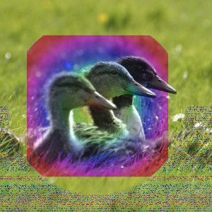
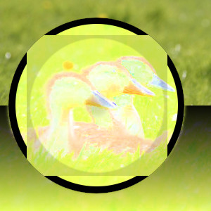

This group contains layer modes that blend layers using properties of the HSV or HSL color models.
- Matiz HSV
-
Figura 8.37. Exemplo para modo de camadas “Matiz”

Camada superior em 100% de opacidade usando o modo “Matiz HSV”.
O modo Matiz utiliza o matiz da camada superior e a saturação e o valor da camada inferior para formar a imagem resultante. No entanto, se a saturação da camada superior é igual for zero, a tonalidade é retirada da camada inferior, também.
- Saturação
-
O modo Saturação utiliza a saturação da camada superior e o matiz e o valor da camada inferior para formar a imagem resultante.
- Cor
-
Figura 8.39. Exemplo para o modo de camada “Cor”

Camada superior em 100% de opacidade usando o modo “Cor HSL”.
O modo Cor usa o matiz e a saturação da camada superior e o valor da camada inferior para formar a imagem resultante.
- Valor
-
Figura 8.40. Exemplo para o modo de camada “valor”

Camada superior em 100% de opacidade usando o modo “Valor HSV”.
O modo Valor utiliza o valor da camada superior e asaturação e o matiz da camada inferior para formar a imagem resultante. Você pode usar este modo para revelar detalhes em áreas escuras e claras de uma imagem sem alterar a saturação e as cores em geral.